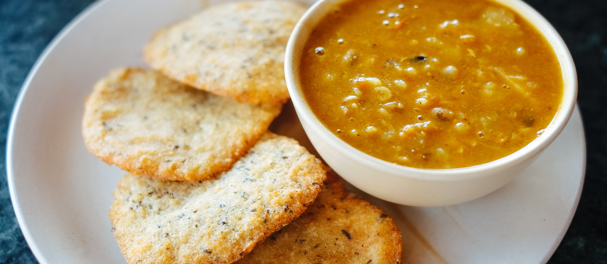

Alu Tama Recipes

One of the delicious Nepali soups to cook is Alu Tama.
Those who love the combination of tanginess and spiciness would love Alu Tama.
Ingredients
- 1 cup bamboo shoots (tama), soaked and cleaned
- 1 cup potatoes (alu), peeled and diced
- 1/2 cup black-eyed peas (bodi)
- 1 medium-sized onion, finely chopped
- 2-3 cloves garlic, minced
- 1 teaspoon ginger, minced
- 1 teaspoon cumin seeds
- 1 teaspoon turmeric powder
- 1 teaspoon red chili powder (adjust to taste)
- 1 teaspoon cumin powder
- 1 teaspoon coriander powder
- 1 teaspoon fenugreek seeds (methi)
- 2-3 dried red chilies
- 2-3 tablespoons cooking oil
- Chopped fresh cilantro (coriander leaves) for garnish
Recipes Instructions
- Soak bamboo shoots (tama) and black-eyed peas (bodi) (if using) in water.
- Peel and dice potatoes (alu).
- Heat oil in a pan, add cumin seeds and dried red chilies.
- Sauté garlic and ginger until fragrant.
- Add diced potatoes and soaked bamboo shoots.
- Add turmeric, red chili, cumin, coriander, fenugreek seeds, and salt.
- Cover and cook until potatoes and bamboo shoots are tender.
- Add soaked black-eyed peas and cook a bit more.
- Adjust seasoning and add a squeeze of lemon juice.
- Garnish with chopped cilantro.
- Enjoy Alu Tama with rice or roti.
Return to top
Return to home page